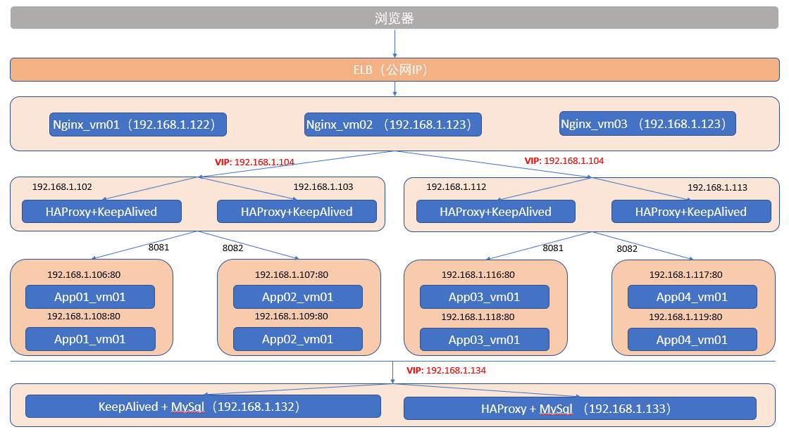

我对于博客建设的思考
为什么要写博客？
写博客有两个目的，一个是促进知识的内化，二是提升自己的影响力。
以教为学是一个很好的学习方式，而且现在信息太多，如果不经过自己整理归纳，那就很容易成为知识收藏者，而不是知识的产生者和传播者，显然我是希望成为后者的，我希望通过将知识体系化从而提升自己的核心竞争力。
影响力有两个很重要的作用，一个是提升收入，一个是提升满足感，这对我都很重要。如何建立影响力？建立品牌并服务他人，对于身边的人，还可以通过行为来影响，但是对于陌生人只能通过分享，因此内容建设很重要，博客是其中一个途径。
如何选择博客内容？
博客内容选择需要考虑三个点：独特性，体系化，刚需。
独特性有两个方面，对于自己，因为要建立T型或者E型人才，所以要确定哪些内容需要深度，哪些内容需要广度；对于外部读者，如果博文是网上没有的，这样用户搜索肯定就会搜到你的，这肯是独特的，但是这样的主题能找到，但是可能不多，这个依赖于自己的观察，比如说Nexus的源码分析。
更多的时候博文内容网上通篇都是，那么用户为什么要看你的，那么这个地方就需要考虑体系化和刚需。内容不能太分散，需要成体系化，这样才能让博文之间产生关联性，提高点击率，产生用户粘性。谈到刚需，那么必然要谈到用户群体，我针对的是初级用户，比如未出学校的大学生和刚入职场的新人，因为他们可能缺少实际的项目经验，因此他们缺少体系化的认识，那么我就正好可以以我自己为例，为用户构建一个成长为T型人才的路径，这也和我自己的目标是一致的。所以博客的文章是可以零散的，但是文章之间的关系必须是体系化，场景化的。
博客不仅限于技术的分享，因为我的目标是让自己过得更好，那么在心理学，历史学，经济学，个人成长等领域也是可以总结和分享，以一个点为起点，逐步向周边辐射，扩展维度，这样才能保持自己的独特性。用20%的时间学习一个领域的80%内容，而不是用80%的时间将一个维度提升至90%，这样才能实现跨学科之间的创新性，当然，在这个过程中，在某一个核心领域还是要长期保持深入学习的。
对于心理学，历史学，经济学，个人成长其实更多的是以读书笔记为重点，通过得到App课程和主题阅读将内容体系化。
为什么主题叫krss
因为我认为知识管理系统就是一个聚合器，是用于将自己整理的文档、书签、各种外部链接等等聚合起来形成适合自己的知识体系，因此取名叫kss，K是指Knowledge，rss指聚合器。
为什么要实现“收集箱/速查表/项目/书签收藏”的功能？
因为我的博客不仅仅是为了分享，而是要作为完整的知识管理系统。那么博客与知识管理系统之间缺什么呢？
- 博客缺少对零散知识的管理，因为博文一般都是基于某一主题的，而不是基于问题的（
通过收集箱和书签收藏解决） - 博客缺少对知识体系化的管理，因为体系需要多篇博文组合才能完成（
通过项目解决） - 博客的搜索不够精准，基于文章标题的搜索很难定位到具体的问题，而基于文章内容的搜索又经常出来太多不相干的内容（
通过速查表和Listary解决）
收集箱和书签收藏能够解决零知识的问题，收集箱是借鉴GTD工作法里的概念，任何不成博文和体系的内容都可以直接扔到这个里面，这里面记录的一般都是针对某一个具体问题的解决方式，也许只有短短几句话，也许只是一个外部链接。
项目可以对博文进行进一步的整理，从而体系化，而不再是一遍遍零散的博文。
速查表是基于问题的，我们遇到的任何问题都可以直接在速查表中搜索答案，速查表中的内容可以来自文章标题，书签，文章中的小标题和收集箱中的标题。我们可以指定博文中的哪些内容自动收集到速查表中，从而提高问题搜索的精准度。
另外通过Listary的关键字功能可以实现快速搜索。
技术规划路线
我是搞软件开发的，因此技术规划也就是软件行业的。因为代码能力需要多写，而且内容更零散的，而架构能力更能体现出体系化，因此我分享更多的是架构能力，基于不同场景使用不同架构，通过一步一步的搭建系统架构来帮助用户提升整体认识。每一个主题都有一个总体的架构图作为目标，为了达到这个目标，我们会分解目标逐步完成，分步验证。
- 【进行中】 Nginx-HAProxy-KeepAlived-Tomcat-MySQL等搭建高可用系统
- 【等待中】 搭建基于SpringCloud的高可用生产系统
- 【等待中】 如何从头开始搭建持续交付系统
- Nginx-HAProxy-KeepAlived-Tomcat-MySQL等搭建高可用系统
